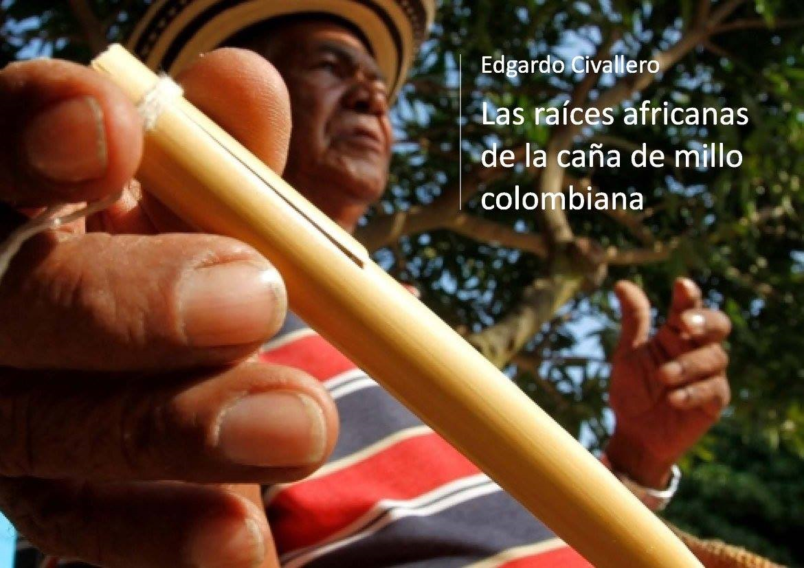

Las raíces africanas de la caña de millo colombiana
Inicio > Libros digitales sobre música. Serie 1 > Las raíces africanas de la caña de millo colombiana
Cómo citar este trabajo: Civallero, Edgardo (2025). Las raíces africanas de la caña de millo colombiana. Edición de archivo. Bogotá: El Zorro de Abajo Editora.
Descargar en PDF.
Este libro presenta un estudio sobre el origen, la estructura y las filiaciones culturales del clarinete tradicional colombiano conocido como caña de millo. A partir de un análisis organológico riguroso, comparativo y documental, el texto defiende la hipótesis de un origen africano occidental para este instrumento, contraponiéndola a las propuestas que lo vinculan con tradiciones indígenas o europeas.
El texto inicia definiendo la caña de millo como un clarinete idioglótico transversal, de tubo abierto en ambos extremos, originalmente fabricado con tallos de sorgo o millo. Su sonido se obtiene por exhalación e inhalación del aire a través de una lengüeta cortada en el mismo tubo; una técnica que, junto con su ejecución alternada de soplo y aspiración, lo vuelve único en el panorama organológico latinoamericano. Su papel dentro del "grupo de millo", conjunto que incluye tambor alegre, llamador, tambora y maracas, convierte a este aerófono en la voz melódica principal de la cumbia, las puyas y los chandés del Caribe colombiano.
Se examina la complejidad técnica y expresiva del instrumento, destacando su sencillez estructural y la riqueza de su ejecución. Se describe el proceso de construcción, los materiales empleados —millo, corozo o carrizo— y los principios acústicos que determinan su timbre y registro. La técnica interpretativa, que alterna la exhalación y la inhalación para obtener diferentes registros, constituye una forma singular de control del flujo de aire y del fraseo musical. Esta particularidad, junto con la posición transversal y el uso de adornos como el ronquido, el güiteo o el lamento, otorga a la caña de millo una expresividad comparable a la de instrumentos de mayor complejidad.
Tras situar el instrumento dentro de la familia de los clarinetes, se revisan los modelos tradicionales de Sudamérica, desde los de los Yukpa y Wayuu de Venezuela hasta los toré amazónicos. Aunque existen coincidencias morfológicas —tubos vegetales, lengüetas idioglóticas, perforaciones rectangulares—, se demuestra que ninguno comparte con la caña de millo la técnica combinada de exhalación e inhalación ni la apertura bilateral del tubo. Los vínculos con el timi de los Yukpa o el sawawa de los Wayuu serían posteriores y resultado de préstamos culturales desde la zona costeña hacia las comunidades indígenas, y no al revés.
El eje del trabajo se centra en la comparación entre la caña de millo y una serie de clarinetes traveseros africanos documentados en África occidental —Senegal, Malí, Ghana, Burkina Faso, Nigeria y Chad—, elaborados igualmente con tallos de sorgo y tocados mediante exhalación e inhalación. Se identifican notables paralelos técnicos: tubos abiertos por ambos extremos, lengüetas cortadas directamente en el material, ausencia de pabellón, regulación de la lámina con un hilo, y uso de la palma o los dedos para obturar el extremo distal. Los instrumentos africanos descritos —teekuluwal de los Fulani, tilboro de los Hausa, tunturu de los Maninka, ligaliga de los Kilba o taletenga de los Akan— presentan la misma morfología y función que la caña de millo, además de compartir una relación con contextos pastoriles o agrícolas.
Las coincidencias históricas refuerzan esta hipótesis: los pueblos africanos esclavizados llevados a Colombia entre los siglos XVI y XVIII provenían en gran parte de Guinea, Benín, Ghana y Nigeria, regiones donde estos clarinetes estaban documentados. Los aerófonos de lengüeta, construidos con tallos de sus cultivos y tocados por niños o pastores durante las cosechas, habrían sido trasladados al Caribe y adaptados con nuevos materiales y repertorios sin perder su base organológica. La caña de millo conservaría, así, los rasgos esenciales de esos clarinetes africanos: la estructura idioglótica, el uso transversal, el control de los extremos del tubo y la técnica respiratoria alternada.
El libro concluye que la caña de millo constituye un testimonio vivo del legado africano en la música del Caribe colombiano, un objeto sonoro que condensa el tránsito de formas pastoriles y rituales africanas a expresiones festivas y populares americanas. Se subraya que este instrumento no solo sobrevivió al trauma del tráfico esclavista, sino que se convirtió en un símbolo identitario y en un vehículo de resistencia cultural. La obra, al reunir evidencia etnomusicológica, histórica y técnica, establece un puente sólido entre los clarinetes del África occidental y la tradición cumbiera del Caribe, aportando un modelo ejemplar de cómo los objetos musicales pueden narrar, en su estructura material, las rutas invisibles de la diáspora africana en América.